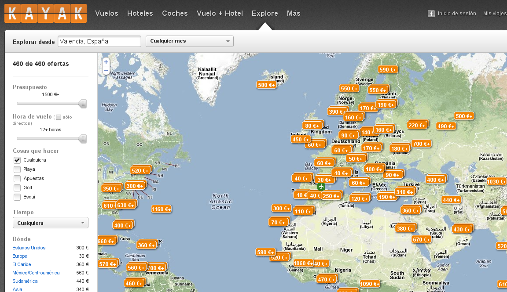
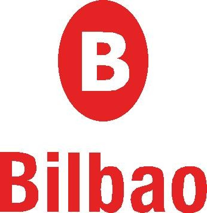

1. Introducción
Vamos a repasar los conceptos de navegación por la web que vimos el año pasado. Realizaremos una serie de visitas a varias páginas web para volver a tomar contacto con esta materia del curso.
2. Página web de "El Tiempo" de Jose Antonio Maldonado

Empezaremos la navegación del 2013 con una página web de previsión meteorológica muy bien estructurada:
¿Sabrías encontrar en esa página el tiempo que va a hacer mañana en Castellón de la Plana?
Volviendo otra vez a la portada de la página, ¿sabrías ahora encontrar el tiempo que va a hacer en Valencia ciudad? ¿Más calor o más frío?
2. Vídeos en Youtube
Vamos a acceder ahora a contenido multimedia accesible en la web a través del portar de videos Youtube.
Vamos a realizar la búsqueda de los siguientes contenidos:
- Un vídeo de un anuncio antiguo de Colacao
- El gol de Iniesta en el mundial de fútbol 2010.
- Como poner la cadena de una bicicleta.
3. Buscador de vuelos
Veamos ahora una web que nos informará de un modo muy visual los mejores destinos para viajar a precios económicos.
Vamos a realizar la búsqueda de los siguientes contenidos:
- ¿Cuáles son los destinos más interesantes saliendo desde Valencia?
4. Buscador de información
Si os dijera que queremos ir a Bilbao a pasar un fin de semana y visitar el museo Guggenheim... ¿sabríais buscarme información interesante sobre qué ver, dónde comer, qué exposiciones hay en el Guggenheim ahora mismo y cuánto nos costará la entrada?
Utiliza las siguienes páginas (por ejemplo) para encontrar la información: